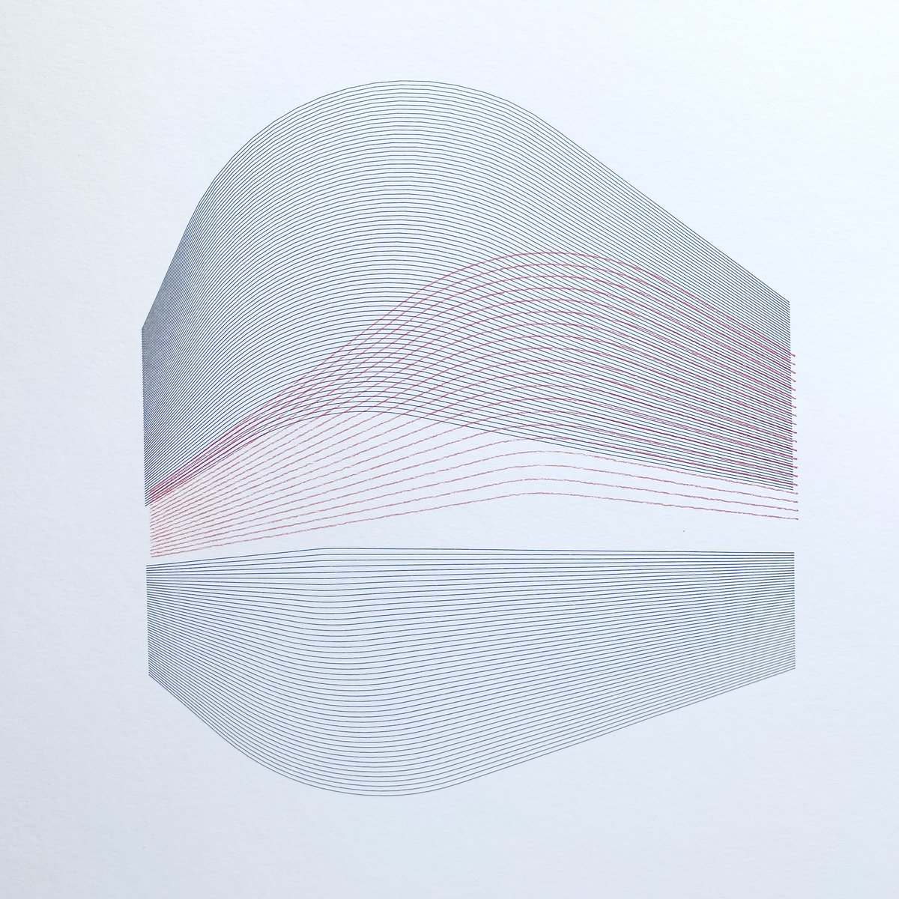
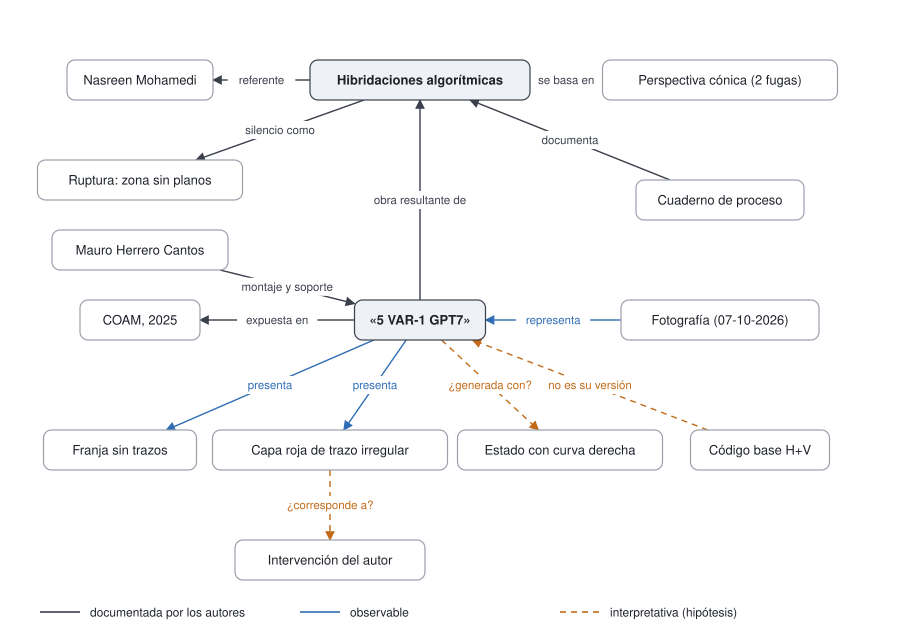

<title>Hibridaciones algorítmicas</title>
<meta name="claude:viewport-fit-sides" content="cover">
<link rel="preconnect" href="https://fonts.googleapis.com">
<link rel="stylesheet" href="https://fonts.googleapis.com/css2?family=IBM+Plex+Mono:wght@400;500&family=Newsreader:ital,opsz,wght@0,6..72,400;0,6..72,500;1,6..72,400&family=Public+Sans:wght@400;600&display=swap">
<style>
:root {
  /* Ficha de catálogo: columna de lámina a la izquierda, datos a la derecha; debajo, el continuum en celdas. */
  --paper: #f5f6f8; --sheet: #ffffff; --ink: #1d2230; --ink-soft: #5b6173; --rule: #d8dbe2;
  --line: #2c4a80; --red: #b03445; --ok: #2c4a80; --warn: #a3651c;
  --f-display: "Newsreader", "Iowan Old Style", Georgia, serif;
  --f-body: "Public Sans", "Helvetica Neue", Arial, sans-serif;
  --f-data: "IBM Plex Mono", ui-monospace, Menlo, monospace;
}
@media (prefers-color-scheme: dark) { :root:not([data-theme="light"]) {
  --paper: #13151b; --sheet: #1b1e26; --ink: #e7e8ed; --ink-soft: #a3a8b6; --rule: #2e323d;
  --line: #8fa9de; --red: #e2717f; --ok: #8fa9de; --warn: #e0a457; color-scheme: dark } }
:root[data-theme="dark"] {
  --paper: #13151b; --sheet: #1b1e26; --ink: #e7e8ed; --ink-soft: #a3a8b6; --rule: #2e323d;
  --line: #8fa9de; --red: #e2717f; --ok: #8fa9de; --warn: #e0a457; color-scheme: dark }
* { box-sizing: border-box; }
body { background: var(--paper); color: var(--ink); font-family: var(--f-body); font-size: 15px; line-height: 1.55;
  padding-left: max(16px, env(safe-area-inset-left, 0px)); padding-right: max(16px, env(safe-area-inset-right, 0px)); }
.page { max-width: 1060px; margin: 0 auto; padding-block: 40px 64px; display: grid; gap: 56px; }
h1, h2, h3 { font-family: var(--f-display); font-weight: 500; text-wrap: balance; margin: 0; }
h1 { font-size: clamp(2rem, 4.4vw, 3.1rem); line-height: 1.05; letter-spacing: -0.01em; }
h2 { font-size: 1.6rem; line-height: 1.2; }
h3 { font-size: 1.12rem; }
p { margin: 0; max-width: 66ch; }
.label { font-family: var(--f-data); font-size: 0.72rem; letter-spacing: 0.08em; text-transform: uppercase; color: var(--ink-soft); }
.lead { font-size: 1.05rem; color: var(--ink-soft); }
section { display: grid; gap: 18px; }
.head { display: grid; gap: 8px; }

.record { display: grid; grid-template-columns: minmax(0, 5fr) minmax(0, 6fr); gap: 40px; align-items: start; }
.plate { margin: 0; display: grid; gap: 10px; }
.plate img { width: 100%; height: auto; display: block; border: 1px solid var(--rule); background: #fff; }
.plate figcaption { font-size: 0.82rem; color: var(--ink-soft); }
.titles { display: grid; gap: 10px; padding-bottom: 20px; border-bottom: 1px solid var(--rule); }
.titles .sub { font-family: var(--f-display); font-style: italic; font-size: 1.35rem; color: var(--ink-soft); }
dl.meta { display: grid; grid-template-columns: 9.5rem minmax(0, 1fr); gap: 10px 18px; margin: 20px 0 0; }
dl.meta dt { font-family: var(--f-data); font-size: 0.74rem; letter-spacing: 0.06em; text-transform: uppercase; color: var(--ink-soft); padding-top: 3px; }
dl.meta dd { margin: 0; }
.note { border-left: 2px solid var(--red); padding: 2px 0 2px 14px; color: var(--ink-soft); font-size: 0.9rem; margin-top: 22px; }

.cells-wrap { display: grid; gap: 18px; }
.cat { display: grid; grid-template-columns: 8.5rem minmax(0, 1fr); gap: 14px; align-items: center; }
.cat .name { font-family: var(--f-data); font-size: 0.78rem; color: var(--ink-soft); text-transform: uppercase; letter-spacing: 0.06em; }
.cells { display: flex; flex-wrap: wrap; gap: 6px; }
.cell { width: 46px; height: 34px; display: grid; place-items: center; font-family: var(--f-data); font-size: 0.72rem;
  font-variant-numeric: tabular-nums; border-radius: 3px; border: 1px solid var(--rule); color: var(--ink-soft); background: transparent; }
.cell.c { border-width: 2px; }
.cell.cubierto { background: var(--line); border-color: var(--line); color: var(--sheet); }
.cell.laguna { border-color: var(--red); color: var(--red); background:
  repeating-linear-gradient(135deg, transparent 0 5px, color-mix(in srgb, var(--red) 22%, transparent) 5px 6px); }
.cell.falta { border-style: dashed; }
.legend { display: flex; flex-wrap: wrap; gap: 8px 22px; font-size: 0.85rem; color: var(--ink-soft); }
.legend span { display: inline-flex; align-items: center; gap: 8px; }
.legend .cell { width: 26px; height: 18px; font-size: 0; }
.totals { font-variant-numeric: tabular-nums; }

details.elements { border-top: 1px solid var(--rule); }
details.elements summary { cursor: pointer; padding: 12px 0; font-weight: 600; }
details.elements summary:focus-visible, a:focus-visible { outline: 2px solid var(--line); outline-offset: 3px; }
.table-scroll { overflow-x: auto; }
table { border-collapse: collapse; width: 100%; font-size: 0.88rem; }
th, td { text-align: left; vertical-align: top; padding: 8px 10px 8px 0; border-bottom: 1px solid var(--rule); }
th { font-family: var(--f-data); font-size: 0.7rem; letter-spacing: 0.07em; text-transform: uppercase; color: var(--ink-soft); font-weight: 500; }
td.id { font-family: var(--f-data); white-space: nowrap; color: var(--ink-soft); }
.state { font-family: var(--f-data); font-size: 0.72rem; white-space: nowrap; }
.state.cubierto { color: var(--line); } .state.laguna { color: var(--red); } .state.falta { color: var(--ink-soft); }

.graph { margin: 0; background: #fff; border: 1px solid var(--rule); overflow-x: auto; }
.graph img { display: block; width: 100%; min-width: 620px; height: auto; }

.dims { display: grid; grid-template-columns: repeat(2, minmax(0, 1fr)); gap: 0 36px; }
.dim { display: grid; gap: 6px; padding: 16px 0; border-top: 1px solid var(--rule); }
.dim-head { display: flex; justify-content: space-between; align-items: baseline; gap: 12px; }
.risk { font-family: var(--f-data); font-size: 0.72rem; text-transform: uppercase; letter-spacing: 0.06em; padding: 2px 8px; border-radius: 999px; border: 1px solid currentColor; }
.risk.alto { color: var(--red); } .risk.medio { color: var(--warn); }

.scale { display: grid; gap: 8px; max-width: 640px; }
.bar { position: relative; height: 14px; border-radius: 7px; background: linear-gradient(90deg, var(--rule), var(--line)); }
.band { position: absolute; top: -6px; bottom: -6px; left: 36%; width: 26%; border: 2px solid var(--red); border-radius: 6px; }
.ends { display: flex; justify-content: space-between; font-family: var(--f-data); font-size: 0.76rem; color: var(--ink-soft); }
.verdict { font-family: var(--f-display); font-size: 1.3rem; }
.crit .eff { font-family: var(--f-data); font-size: 0.72rem; white-space: nowrap; }
.eff.refuerza { color: var(--line); } .eff.en-parte { color: var(--warn); } .eff.sin-datos { color: var(--ink-soft); }

.two { display: grid; grid-template-columns: minmax(0, 1fr) minmax(0, 1fr); gap: 36px; }
ol.qs { margin: 0; padding-left: 1.3rem; display: grid; gap: 6px; }
ul.files { list-style: none; margin: 0; padding: 0; display: grid; gap: 6px; }
ul.files code { font-family: var(--f-data); font-size: 0.8rem; }
footer { font-size: 0.82rem; color: var(--ink-soft); border-top: 1px solid var(--rule); padding-top: 18px; display: grid; gap: 6px; }

@media (max-width: 760px) {
  .record, .two, .dims { grid-template-columns: minmax(0, 1fr); }
  .cat { grid-template-columns: minmax(0, 1fr); gap: 6px; }
  dl.meta { grid-template-columns: minmax(0, 1fr); gap: 2px; }
  dl.meta dd { margin-bottom: 10px; }
}
</style>
<main class="page">
  <section class="record" aria-labelledby="t">
    <figure class="plate">
      
      <figcaption>«5 VAR-1 GPT7». Fotografía del 7 de octubre de 2026; autoría pendiente de confirmar. CC BY-NC-ND 4.0.</figcaption>
    </figure>
    <div>
      <div class="titles">
        <span class="label">Expediente ODA · demostrador</span>
        <h1 id="t">Hibridaciones algorítmicas</h1>
        <span class="sub">Obra resultante: «5 VAR-1 GPT7»</span>
      </div>
      <dl class="meta">
        <dt>Autor</dt><dd>Juan Alonso López Iniesta</dd>
        <dt>Parte física</dt><dd>Mauro Herrero Cantos</dd>
        <dt>Técnica</dt><dd>Técnica mixta: plotter de pluma e intervención del autor</dd>
        <dt>Soporte</dt><dd>Papel (dimensiones sin documentar)</dd>
        <dt>Referente</dt><dd>Principios operativos de la obra de Nasreen Mohamedi: ritmo, ruptura o silencio, acumulación</dd>
        <dt>Sistema</dt><dd>Perspectiva cónica con dos puntos de fuga (30° y 60°), escrita en código</dd>
        <dt>Exposición</dt><dd>Colegio Oficial de Arquitectos de Madrid (COAM), 2025</dd>
        <dt>Géneros</dt><dd>Generative art / arte generativo; Computer art (taxonomía AEMA)</dd>
        <dt>Identificador</dt><dd>DOI de Zenodo pendiente (identificador de depósito, no identificador ODA)</dd>
      </dl>
      <p class="note">Este expediente lo prepara el grupo IPEX (URJC) como demostrador del método ODA. No es una evaluación de Fund_ODA ni declara que la obra sea un ODA reconocido: registra qué metadatos satisface la obra y propone una valoración revisable.</p>
    </div>
  </section>

  <section aria-labelledby="s-cont">
    <div class="head">
      <span class="label">Esquema del libro · 40 elementos</span>
      <h2 id="s-cont">Qué metadatos satisface la obra</h2>
      <p class="lead totals">Obligatorios: 22 cubiertos y 3 declarados como laguna. Opcionales: 11 cubiertos y 4 que no constan. La validación SHACL no da errores.</p>
    </div>
    <div class="cells-wrap"><div class="cat"><span class="name">Descriptiva</span><div class="cells"><span class="cell cubierto c" role="img" aria-label="1.1 Título, obligatorio: cubierto" title="1.1 Título (C): cubierto">1.1</span><span class="cell cubierto c" role="img" aria-label="1.2 Creador, obligatorio: cubierto" title="1.2 Creador (C): cubierto">1.2</span><span class="cell cubierto o" role="img" aria-label="1.3 Asunto, opcional: cubierto" title="1.3 Asunto (O): cubierto">1.3</span><span class="cell cubierto c" role="img" aria-label="1.4 Descripción, obligatorio: cubierto" title="1.4 Descripción (C): cubierto">1.4</span><span class="cell cubierto c" role="img" aria-label="1.5 Fecha, obligatorio: cubierto" title="1.5 Fecha (C): cubierto">1.5</span><span class="cell cubierto c" role="img" aria-label="1.6 Formato, obligatorio: cubierto" title="1.6 Formato (C): cubierto">1.6</span><span class="cell laguna c" role="img" aria-label="1.7 Identificador, obligatorio: laguna declarada" title="1.7 Identificador (C): laguna declarada">1.7</span><span class="cell cubierto o" role="img" aria-label="1.8 Fuente, opcional: cubierto" title="1.8 Fuente (O): cubierto">1.8</span><span class="cell laguna c" role="img" aria-label="1.9 Idioma, obligatorio: laguna declarada" title="1.9 Idioma (C): laguna declarada">1.9</span><span class="cell cubierto o" role="img" aria-label="1.10 Relación, opcional: cubierto" title="1.10 Relación (O): cubierto">1.10</span><span class="cell falta o" role="img" aria-label="1.11 Cobertura, opcional: no consta" title="1.11 Cobertura (O): no consta">1.11</span></div></div><div class="cat"><span class="name">Técnica</span><div class="cells"><span class="cell cubierto c" role="img" aria-label="2.1 Formato de archivo, obligatorio: cubierto" title="2.1 Formato de archivo (C): cubierto">2.1</span><span class="cell cubierto c" role="img" aria-label="2.2 Resolución, obligatorio: cubierto" title="2.2 Resolución (C): cubierto">2.2</span><span class="cell cubierto o" role="img" aria-label="2.3 Compresión, opcional: cubierto" title="2.3 Compresión (O): cubierto">2.3</span><span class="cell cubierto o" role="img" aria-label="2.4 Profundidad de bits, opcional: cubierto" title="2.4 Profundidad de bits (O): cubierto">2.4</span><span class="cell cubierto o" role="img" aria-label="2.5 Metadatos incrustados, opcional: cubierto" title="2.5 Metadatos incrustados (O): cubierto">2.5</span><span class="cell cubierto c" role="img" aria-label="2.6 Suma de comprobación, obligatorio: cubierto" title="2.6 Suma de comprobación (C): cubierto">2.6</span><span class="cell cubierto c" role="img" aria-label="2.7 Tamaño del fichero, obligatorio: cubierto" title="2.7 Tamaño del fichero (C): cubierto">2.7</span><span class="cell cubierto c" role="img" aria-label="2.8 Metadatos de reproducibilidad y control de versiones, obligatorio: cubierto" title="2.8 Metadatos de reproducibilidad y control de versiones (C): cubierto">2.8</span><span class="cell cubierto o" role="img" aria-label="2.9 Dependencias técnicas, opcional: cubierto" title="2.9 Dependencias técnicas (O): cubierto">2.9</span><span class="cell cubierto c" role="img" aria-label="2.10 Relaciones detalladas entre componentes, obligatorio: cubierto" title="2.10 Relaciones detalladas entre componentes (C): cubierto">2.10</span></div></div><div class="cat"><span class="name">Preservación</span><div class="cells"><span class="cell cubierto c" role="img" aria-label="3.1 Plan de preservación a largo plazo, obligatorio: cubierto" title="3.1 Plan de preservación a largo plazo (C): cubierto">3.1</span><span class="cell cubierto c" role="img" aria-label="3.2 Vías de migración, obligatorio: cubierto" title="3.2 Vías de migración (C): cubierto">3.2</span><span class="cell cubierto c" role="img" aria-label="3.3 Suma de comprobación y valores hash, obligatorio: cubierto" title="3.3 Suma de comprobación y valores hash (C): cubierto">3.3</span><span class="cell cubierto o" role="img" aria-label="3.4 Estructura compleja de objetos, opcional: cubierto" title="3.4 Estructura compleja de objetos (O): cubierto">3.4</span><span class="cell laguna c" role="img" aria-label="3.5 Lugar de almacenamiento, obligatorio: laguna declarada" title="3.5 Lugar de almacenamiento (C): laguna declarada">3.5</span></div></div><div class="cat"><span class="name">Derechos</span><div class="cells"><span class="cell cubierto c" role="img" aria-label="4.1 Estado de los derechos, obligatorio: cubierto" title="4.1 Estado de los derechos (C): cubierto">4.1</span><span class="cell cubierto c" role="img" aria-label="4.2 Términos de la licencia, obligatorio: cubierto" title="4.2 Términos de la licencia (C): cubierto">4.2</span><span class="cell cubierto c" role="img" aria-label="4.3 Permisos y restricciones, obligatorio: cubierto" title="4.3 Permisos y restricciones (C): cubierto">4.3</span><span class="cell cubierto c" role="img" aria-label="4.4 Propiedad y atribución, obligatorio: cubierto" title="4.4 Propiedad y atribución (C): cubierto">4.4</span></div></div><div class="cat"><span class="name">Arte</span><div class="cells"><span class="cell cubierto c" role="img" aria-label="5.1 Intención artística, obligatorio: cubierto" title="5.1 Intención artística (C): cubierto">5.1</span><span class="cell cubierto o" role="img" aria-label="5.2 Influencias, opcional: cubierto" title="5.2 Influencias (O): cubierto">5.2</span><span class="cell falta o" role="img" aria-label="5.3 Simbolismo, opcional: no consta" title="5.3 Simbolismo (O): no consta">5.3</span><span class="cell cubierto c" role="img" aria-label="5.4 Técnicas, obligatorio: cubierto" title="5.4 Técnicas (C): cubierto">5.4</span><span class="cell cubierto o" role="img" aria-label="5.5 Historial de exposiciones, opcional: cubierto" title="5.5 Historial de exposiciones (O): cubierto">5.5</span><span class="cell falta o" role="img" aria-label="5.6 Recepción crítica, opcional: no consta" title="5.6 Recepción crítica (O): no consta">5.6</span><span class="cell falta o" role="img" aria-label="5.7 Contexto histórico, opcional: no consta" title="5.7 Contexto histórico (O): no consta">5.7</span><span class="cell cubierto c" role="img" aria-label="5.8 Innovación, obligatorio: cubierto" title="5.8 Innovación (C): cubierto">5.8</span><span class="cell cubierto c" role="img" aria-label="5.9 Géneros/Métodos artísticos, obligatorio: cubierto" title="5.9 Géneros/Métodos artísticos (C): cubierto">5.9</span><span class="cell cubierto o" role="img" aria-label="5.10 Temas, opcional: cubierto" title="5.10 Temas (O): cubierto">5.10</span></div></div></div>
    <div class="legend">
      <span><span class="cell cubierto c"></span>Cubierto</span>
      <span><span class="cell laguna c"></span>Laguna declarada, con su motivo</span>
      <span><span class="cell falta o"></span>No consta</span>
      <span>Borde grueso: obligatorio (C). Borde fino: opcional (O)</span>
    </div>
    <details class="elements">
      <summary>Ver los 40 elementos y sus registros</summary>
      <div class="table-scroll"><table>
        <thead><tr><th>Id</th><th>Elemento</th><th>Estado</th><th>Sobre</th><th>Valor o motivo</th></tr></thead>
        <tbody><tr><td class="id">1.1</td><td>Título <span class="label">C</span></td><td><span class="state cubierto">documentado</span></td><td>Hibridaciones algorítmicas</td><td>Hibridaciones algorítmicas</td></tr><tr><td class="id">1.1</td><td>Título <span class="label">C</span></td><td><span class="state cubierto">documentado</span></td><td>«5 VAR-1 GPT7»</td><td>5 VAR-1 GPT7</td></tr><tr><td class="id">1.2</td><td>Creador <span class="label">C</span></td><td><span class="state cubierto">documentado</span></td><td>Hibridaciones algorítmicas</td><td>Juan Alonso López Iniesta</td></tr><tr><td class="id">1.2</td><td>Creador <span class="label">C</span></td><td><span class="state cubierto">documentado</span></td><td>«5 VAR-1 GPT7»</td><td>Juan Alonso López Iniesta</td></tr><tr><td class="id">1.3</td><td>Asunto <span class="label">O</span></td><td><span class="state cubierto">documentado</span></td><td>Hibridaciones algorítmicas</td><td>Perspectiva cónica; ritmo; serialidad; ruptura; acumulación</td></tr><tr><td class="id">1.4</td><td>Descripción <span class="label">C</span></td><td><span class="state cubierto">documentado</span></td><td>Hibridaciones algorítmicas</td><td>Serie de investigación artística en dibujo generativo. Un sistema escrito en código construye volúmenes por acumulación de planos horizontales en perspectiva cónica con dos puntos de fuga y los somete a principios tomados de la obra de Nasreen Mohamedi: el ritmo regular, la ruptura o silencio y la acumulación. El sistema ha pasado por varios estados: vértice agudo, arco tangente en el vértice, curva amplia en el lado derecho y silueta con dos sistemas de relleno.</td></tr><tr><td class="id">1.4</td><td>Descripción <span class="label">C</span></td><td><span class="state cubierto">documentado</span></td><td>«5 VAR-1 GPT7»</td><td>Dibujo en técnica mixta. Un volumen de líneas oscuras de contorno curvo queda interrumpido por una franja horizontal sin trazos, bajo la cual continúa un segundo volumen. Una serie de líneas rojas de trazo irregular se superpone, desplazada, a la mitad inferior del volumen superior.</td></tr><tr><td class="id">1.5</td><td>Fecha <span class="label">C</span></td><td><span class="state cubierto">desconocido</span></td><td>Hibridaciones algorítmicas</td><td>No consta la fecha de inicio de la serie. El cuaderno de proceso (18-10-2026) es posterior a la obra resultante, expuesta en 2025.</td></tr><tr><td class="id">1.5</td><td>Fecha <span class="label">C</span></td><td><span class="state cubierto">inferido</span></td><td>«5 VAR-1 GPT7»</td><td>2025 o anterior</td></tr><tr><td class="id">1.6</td><td>Formato <span class="label">C</span></td><td><span class="state cubierto">inferido</span></td><td>«5 VAR-1 GPT7»</td><td>Dibujo sobre papel</td></tr><tr><td class="id">1.7</td><td>Identificador <span class="label">C</span></td><td><span class="state laguna">pendiente</span></td><td>Hibridaciones algorítmicas</td><td>Se asignará un DOI de Zenodo al depositar el expediente. Será un identificador de depósito, no un identificador ODA otorgado por Fund_ODA.</td></tr><tr><td class="id">1.8</td><td>Fuente <span class="label">O</span></td><td><span class="state cubierto">documentado</span></td><td>Hibridaciones algorítmicas</td><td>Principios operativos de la obra de Nasreen Mohamedi: ritmo, serialidad, ruptura y tensión entre orden y anomalía</td></tr><tr><td class="id">1.9</td><td>Idioma <span class="label">C</span></td><td><span class="state laguna">no aplicable</span></td><td>«5 VAR-1 GPT7»</td><td>Obra visual sin contenido textual. La documentación del expediente está en español.</td></tr><tr><td class="id">1.10</td><td>Relación <span class="label">O</span></td><td><span class="state cubierto">documentado</span></td><td>«5 VAR-1 GPT7»</td><td>Obra resultante de Hibridaciones algorítmicas</td></tr><tr><td class="id">1.11</td><td>Cobertura <span class="label">O</span></td><td><span class="state falta">no consta</span></td><td></td><td>—</td></tr><tr><td class="id">2.1</td><td>Formato de archivo <span class="label">C</span></td><td><span class="state cubierto">documentado</span></td><td>Fotografía</td><td>PNG (máster); JPEG (representaciones)</td></tr><tr><td class="id">2.1</td><td>Formato de archivo <span class="label">C</span></td><td><span class="state cubierto">documentado</span></td><td>Código base</td><td>DOCX: código Python copiado en un documento de Word</td></tr><tr><td class="id">2.2</td><td>Resolución <span class="label">C</span></td><td><span class="state cubierto">documentado</span></td><td>Fotografía</td><td>3024 × 3024 px (máster); 1200 × 1200 px y 400 × 400 px (representaciones)</td></tr><tr><td class="id">2.2</td><td>Resolución <span class="label">C</span></td><td><span class="state cubierto">no aplicable</span></td><td>«5 VAR-1 GPT7»</td><td>La obra es un dibujo sobre papel; la resolución en píxeles solo se aplica a sus representaciones. Sus dimensiones físicas no constan.</td></tr><tr><td class="id">2.3</td><td>Compresión <span class="label">O</span></td><td><span class="state cubierto">documentado</span></td><td>Fotografía</td><td>PNG sin pérdida (máster); JPEG con calidad 85 (representaciones)</td></tr><tr><td class="id">2.4</td><td>Profundidad de bits <span class="label">O</span></td><td><span class="state cubierto">documentado</span></td><td>Fotografía</td><td>RGB, 8 bits por canal</td></tr><tr><td class="id">2.5</td><td>Metadatos incrustados <span class="label">O</span></td><td><span class="state cubierto">documentado</span></td><td>Fotografía</td><td>La fotografía recibida contenía metadatos XMP y EXIF: fecha de captura (07-10-2026), dispositivo (iPhone 11 Pro Max), edición en Adobe Photoshop (13-10-2026) y coordenadas GPS. Se han eliminado todos los metadatos incrustados de las copias depositadas. El expediente registra la fecha y el dispositivo, pero no la ubicación.</td></tr><tr><td class="id">2.6</td><td>Suma de comprobación <span class="label">C</span></td><td><span class="state cubierto">documentado</span></td><td>Hibridaciones algorítmicas</td><td>SHA-256 de todos los ficheros en preservacion/manifiesto-sha256.txt</td></tr><tr><td class="id">2.7</td><td>Tamaño del fichero <span class="label">C</span></td><td><span class="state cubierto">documentado</span></td><td>Hibridaciones algorítmicas</td><td>Tamaño de cada fichero en ro-crate-metadata.json (contentSize) y en el manifiesto</td></tr><tr><td class="id">2.8</td><td>Metadatos de reproducibilidad y control de versiones <span class="label">C</span></td><td><span class="state cubierto">reconstruido</span></td><td>Hibridaciones algorítmicas</td><td>El cuaderno describe cuatro estados del sistema: vértice agudo; arco tangente en el vértice; curva amplia en el lado derecho (en curso según el cuaderno); y silueta con dos sistemas de relleno, horizontal (H) y vertical (V). El código conservado corresponde al sistema de silueta H+V. No se ha identificado la versión que produjo «5 VAR-1 GPT7». El cálculo es determinista: con el código y los parámetros correctos, el trazado del plotter es repetible; la intervención del autor no lo es.</td></tr><tr><td class="id">2.9</td><td>Dependencias técnicas <span class="label">O</span></td><td><span class="state cubierto">documentado</span></td><td>Hibridaciones algorítmicas</td><td>Cálculo: Python 3 con la biblioteca estándar (módulo math). Trazado: biblioteca de control del plotter y plotter de pluma. No constan el modelo de plotter, la pluma, la tinta, el papel ni la versión de Python.</td></tr><tr><td class="id">2.10</td><td>Relaciones detalladas entre componentes <span class="label">C</span></td><td><span class="state cubierto">documentado</span></td><td>Hibridaciones algorítmicas</td><td>Trece afirmaciones relacionales con responsable, evidencia y estatuto (en este expediente y en relaciones/grafo.svg)</td></tr><tr><td class="id">3.1</td><td>Plan de preservación a largo plazo <span class="label">C</span></td><td><span class="state cubierto">documentado</span></td><td>Hibridaciones algorítmicas</td><td>Plan por dimensiones (informacional, estructural, funcional y experiencial) en diagnostico/diagnostico.md</td></tr><tr><td class="id">3.2</td><td>Vías de migración <span class="label">C</span></td><td><span class="state cubierto">documentado</span></td><td>Hibridaciones algorítmicas</td><td>Código: recuperar los ficheros .py originales, conservarlos en texto UTF-8 bajo control de versiones y guardar el SVG de cada trazado. Imagen: PNG sin pérdida como máster; JPEG solo como representación.</td></tr><tr><td class="id">3.3</td><td>Suma de comprobación y valores hash <span class="label">C</span></td><td><span class="state cubierto">documentado</span></td><td>Hibridaciones algorítmicas</td><td>SHA-256; verificación con scripts/checksums.py --verificar</td></tr><tr><td class="id">3.4</td><td>Estructura compleja de objetos <span class="label">O</span></td><td><span class="state cubierto">documentado</span></td><td>Hibridaciones algorítmicas</td><td>Paquete RO-Crate 1.2 (ro-crate-metadata.json) con entidades, ficheros, eventos y relaciones</td></tr><tr><td class="id">3.5</td><td>Lugar de almacenamiento <span class="label">C</span></td><td><span class="state laguna">pendiente</span></td><td>Hibridaciones algorítmicas</td><td>Depósito previsto en Zenodo, comunidad IPEX: un registro abierto con el expediente y otro de acceso restringido con los ficheros maestros.</td></tr><tr><td class="id">3.5</td><td>Lugar de almacenamiento <span class="label">C</span></td><td><span class="state laguna">desconocido</span></td><td>«5 VAR-1 GPT7»</td><td>No consta dónde se conserva el original de «5 VAR-1 GPT7».</td></tr><tr><td class="id">4.1</td><td>Estado de los derechos <span class="label">C</span></td><td><span class="state cubierto">documentado</span></td><td>«5 VAR-1 GPT7»</td><td>Obra protegida por derechos de autor (In Copyright)</td></tr><tr><td class="id">4.2</td><td>Términos de la licencia <span class="label">C</span></td><td><span class="state cubierto">documentado</span></td><td>Hibridaciones algorítmicas</td><td>Metadatos: CC0 1.0. Perfil, correspondencias y diagnóstico: CC BY 4.0. Scripts: MIT. Representaciones de la obra: CC BY-NC-ND 4.0. Ficheros maestros: todos los derechos reservados.</td></tr><tr><td class="id">4.3</td><td>Permisos y restricciones <span class="label">C</span></td><td><span class="state cubierto">documentado</span></td><td>Hibridaciones algorítmicas</td><td>Ficheros maestros (fotografía en alta resolución y código) en acceso restringido, bajo solicitud</td></tr><tr><td class="id">4.4</td><td>Propiedad y atribución <span class="label">C</span></td><td><span class="state cubierto">documentado</span></td><td>«5 VAR-1 GPT7»</td><td>Autor: Juan Alonso López Iniesta. Realización de la parte física: Mauro Herrero Cantos.</td></tr><tr><td class="id">4.4</td><td>Propiedad y atribución <span class="label">C</span></td><td><span class="state cubierto">desconocido</span></td><td>Fotografía</td><td>No consta la autoría de la fotografía, necesaria para su crédito y su licencia.</td></tr><tr><td class="id">5.1</td><td>Intención artística <span class="label">C</span></td><td><span class="state cubierto">documentado</span></td><td>Hibridaciones algorítmicas</td><td>Trasladar al propio sistema de perspectiva cónica los principios operativos de la obra de Nasreen Mohamedi (ritmo, serialidad, ruptura y tensión entre orden y anomalía) sin imitar su estilo visual. La hibridación se entiende como interferencia de dos lógicas coherentes, ninguna subordinada a la otra, de la que surge un lenguaje nuevo.</td></tr><tr><td class="id">5.2</td><td>Influencias <span class="label">O</span></td><td><span class="state cubierto">documentado</span></td><td>Hibridaciones algorítmicas</td><td>Nasreen Mohamedi (1937–1990)</td></tr><tr><td class="id">5.3</td><td>Simbolismo <span class="label">O</span></td><td><span class="state falta">no consta</span></td><td></td><td>—</td></tr><tr><td class="id">5.4</td><td>Técnicas <span class="label">C</span></td><td><span class="state cubierto">documentado</span></td><td>«5 VAR-1 GPT7»</td><td>Técnica mixta: plotter de pluma e intervención del autor</td></tr><tr><td class="id">5.5</td><td>Historial de exposiciones <span class="label">O</span></td><td><span class="state cubierto">documentado</span></td><td>«5 VAR-1 GPT7»</td><td>Colegio Oficial de Arquitectos de Madrid (COAM), 2025</td></tr><tr><td class="id">5.6</td><td>Recepción crítica <span class="label">O</span></td><td><span class="state falta">no consta</span></td><td></td><td>—</td></tr><tr><td class="id">5.7</td><td>Contexto histórico <span class="label">O</span></td><td><span class="state falta">no consta</span></td><td></td><td>—</td></tr><tr><td class="id">5.8</td><td>Innovación <span class="label">C</span></td><td><span class="state cubierto">documentado</span></td><td>Hibridaciones algorítmicas</td><td>La hibridación como interferencia de lógicas y no como imitación: la perspectiva cónica aporta el espacio y la dirección de las líneas; los principios de Mohamedi, el intervalo, el silencio y el ritmo. En «5 VAR-1 GPT7» se suma la técnica mixta, que combina el trazado del plotter con la intervención del autor sobre la hoja.</td></tr><tr><td class="id">5.9</td><td>Géneros/Métodos artísticos <span class="label">C</span></td><td><span class="state cubierto">inferido</span></td><td>Hibridaciones algorítmicas</td><td>Generative art / arte generativo; Computer art (taxonomía AEMA)</td></tr><tr><td class="id">5.10</td><td>Temas <span class="label">O</span></td><td><span class="state cubierto">inferido</span></td><td>Hibridaciones algorítmicas</td><td>Algorithm; Code; Perspective; Materiality; Hand (taxonomía EMAP)</td></tr></tbody>
      </table></div>
    </details>
  </section>

  <section aria-labelledby="s-rel">
    <div class="head">
      <span class="label">13 afirmaciones · 7 de los autores · 3 observables · 3 hipótesis</span>
      <h2 id="s-rel">Relaciones y su estatuto</h2>
      <p class="lead">Cada relación dice quién la sostiene y con qué evidencia. Las discontinuas son hipótesis del equipo que los autores deben confirmar.</p>
    </div>
    <figure class="graph"></figure>
  </section>

  <section aria-labelledby="s-diag">
    <div class="head">
      <span class="label">Diagnóstico de preservación</span>
      <h2 id="s-diag">Cuatro dimensiones</h2>
    </div>
    <div class="dims"><div class="dim"><div class="dim-head"><h3>Informacional</h3><span class="risk alto">riesgo alto</span></div><p>El código se conserva copiado en Word, sin la sangría que Python necesita. El SVG enviado al plotter no se guarda.</p></div><div class="dim"><div class="dim-head"><h3>Estructural</h3><span class="risk alto">riesgo alto</span></div><p>No se sabe qué versión del código y qué parámetros produjeron la obra. La cronología entre la obra (2025) y el cuaderno (2026) no encaja.</p></div><div class="dim"><div class="dim-head"><h3>Funcional</h3><span class="risk medio">riesgo medio</span></div><p>El cálculo es determinista y solo usa la biblioteca estándar de Python, pero el fichero conservado no se ejecuta tal cual.</p></div><div class="dim"><div class="dim-head"><h3>Experiencial</h3><span class="risk alto">riesgo alto</span></div><p>La intervención del autor es irrepetible y no está descrita. No constan dimensiones, papel ni tintas.</p></div></div>
  </section>

  <section aria-labelledby="s-val">
    <div class="head">
      <span class="label">Propuesta del equipo, revisable</span>
      <h2 id="s-val">Condición aurática</h2>
    </div>
    <div class="scale" aria-label="Posición propuesta: intermedia, entre débil y fuerte">
      <div class="bar"><span class="band"></span></div>
      <div class="ends"><span>débil</span><span>fuerte</span></div>
    </div>
    <p class="verdict">Intermedia, con potencial para reforzarse.</p>
    <p>Los criterios que dependen de la obra y de su proceso apuntan hacia el polo fuerte. Los que dependen de su recorrido público no tienen datos todavía. Lo que más la haría avanzar: describir la intervención, identificar la versión del código y documentar la exposición y su recepción.</p>
    <div class="table-scroll"><table>
      <thead><tr><th>Criterio del libro</th><th>Efecto</th><th>Evidencia</th></tr></thead>
      <tbody><tr class="crit"><td>Singularidad</td><td><span class="eff refuerza">refuerza</span></td><td>Trazado repetible e intervención irrepetible: cada hoja es única.</td></tr><tr class="crit"><td>Interacción con la tecnología digital</td><td><span class="eff refuerza">refuerza</span></td><td>Sistema de código propio y plotter, en diálogo con la mano.</td></tr><tr class="crit"><td>Condiciones de creación</td><td><span class="eff refuerza">refuerza</span></td><td>Intención y proceso documentados por el autor.</td></tr><tr class="crit"><td>Documentación</td><td><span class="eff en-parte">en parte</span></td><td>22 de 25 obligatorios cubiertos; falta la versión del código.</td></tr><tr class="crit"><td>Condiciones de exhibición</td><td><span class="eff sin-datos">sin datos</span></td><td>Una exposición (COAM, 2025), sin más detalle.</td></tr><tr class="crit"><td>Importancia cultural</td><td><span class="eff sin-datos">sin datos</span></td><td>Sin recepción crítica ni contexto histórico documentados.</td></tr><tr class="crit"><td>Impacto en los espectadores</td><td><span class="eff sin-datos">sin datos</span></td><td>Sin registros.</td></tr></tbody>
    </table></div>
  </section>

  <section class="two" aria-label="Preguntas y ficheros">
    <div class="head">
      <span class="label">Para los autores</span>
      <h2>Preguntas abiertas</h2>
      <ol class="qs"><li>¿En qué consistió la intervención del autor? ¿Es la capa roja?</li><li>¿Qué abarcó la parte física de la que se encargó Mauro Herrero Cantos?</li><li>¿Con qué versión del código y qué parámetros se trazó la obra?</li><li>¿Cómo encaja la fecha de la obra (2025) con el cuaderno de 2026?</li><li>¿Qué medidas tiene la hoja y qué papel, plumas y tintas se usaron?</li><li>¿Dónde se conserva el original?</li><li>¿Qué datos hay de la exposición en el COAM?</li><li>¿Quién hizo la fotografía?</li><li>¿Qué significa el título «5 VAR-1 GPT7»?</li></ol>
    </div>
    <div class="head">
      <span class="label">RO-Crate 1.2 · válido</span>
      <h2>Qué contiene el paquete</h2>
      <ul class="files">
        <li><code>expediente-oda.jsonld</code> registros y afirmaciones</li>
        <li><code>ro-crate-metadata.json</code> entidades, ficheros y eventos</li>
        <li><code>diagnostico/diagnostico.md</code> diagnóstico y valoración</li>
        <li><code>edm/edm.xml</code> exportación para Hispana y Europeana</li>
        <li><code>preservacion/manifiesto-sha256.txt</code> sumas de verificación</li>
        <li><code>representaciones/</code> imágenes sin metadatos incrustados</li>
      </ul>
      <p class="lead">La fotografía maestra y el código de la obra se depositan aparte, en acceso restringido.</p>
    </div>
  </section>

  <footer>
    <span>IPEX, Grupo de Investigación en Interfaces y Prototipos Experimentales · Universidad Rey Juan Carlos · 2 de noviembre de 2026</span>
    <span>Repositorio: github.com/IPEX-LAB/oda-demostrador · Método: <i>Objeto Digital Aurático</i> (Peter Lang, 2025). Metadatos CC0 1.0 · textos CC BY 4.0 · imágenes de la obra CC BY-NC-ND 4.0</span>
  </footer>
</main>
